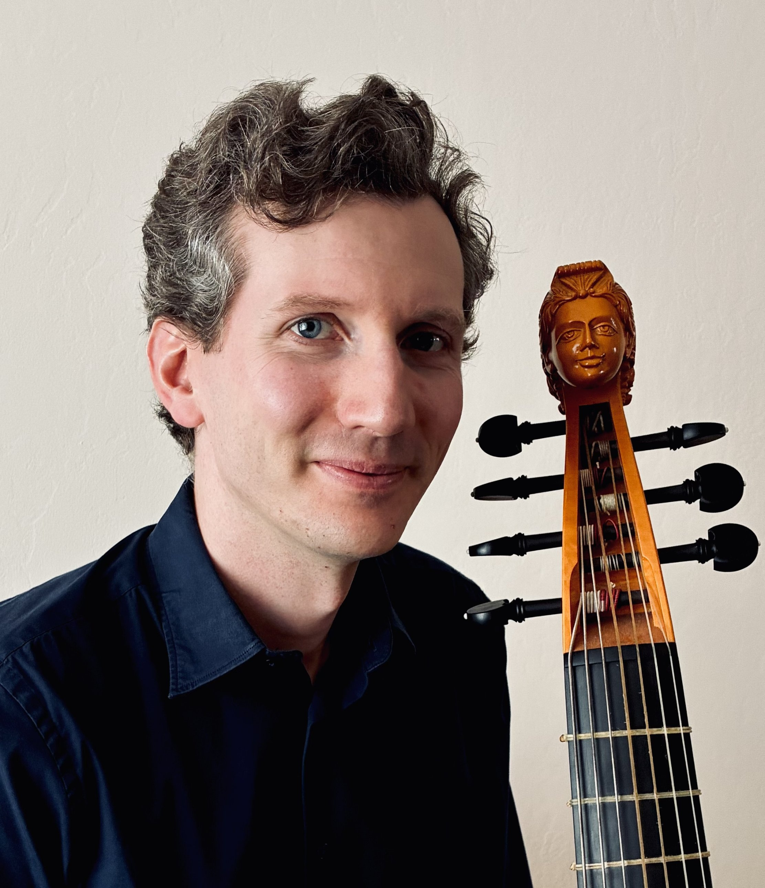

Frederic Rosselet has a deep interest in both early and new music, finding inspiration in uncovering modern and contemporary works while exploring historical repertoire on period instruments. As a cellist, he has appeared at major festivals and with leading ensembles, including the Verbier Festival (Switzerland), Yellow Barn (Vermont), Philharmonia Baroque Orchestra, Carmel Bach Festival, and American Bach Soloists. His recent projects have centered on late French baroque music for the viola da gamba.
Originally from Switzerland, Frederic studied at the Lausanne Conservatory, the Basel Music Academy, and the Schola Cantorum Basiliensis before completing his Doctor of Musical Arts at the University of Southern California. He is grateful to have had many inspiring mentors, including Ralph Kirshbaum, William Skeen, Rafael Rosenfeld, Marc Jaermann and Denis Guy.